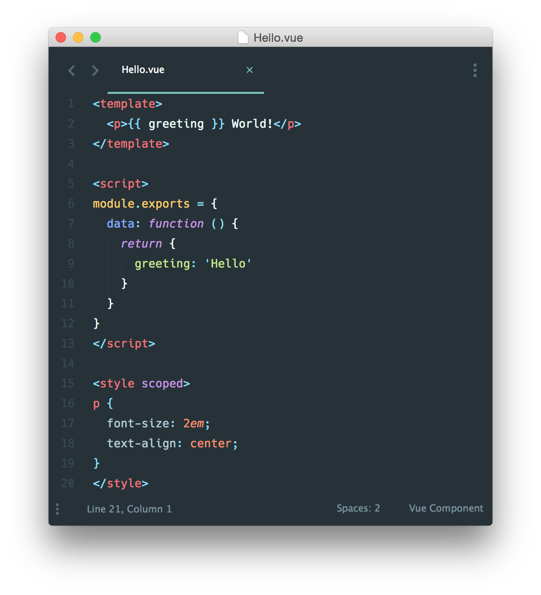
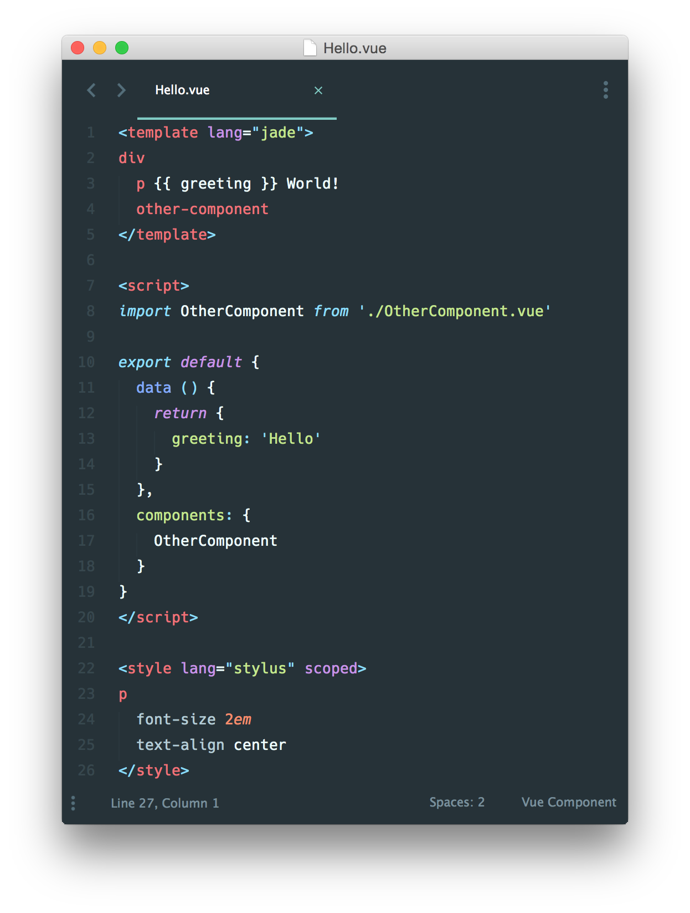

在很多 Vue 项目中，我们使用 Vue.component 来定义全局组件，紧接着用 new Vue({ el: '#container '}) 在每个页面内指定一个容器元素。
这种方式在很多中小规模的项目中运作的很好，在这些项目里 JavaScript 只被用来加强特定的视图。但当在更复杂的项目中，或者你的前端完全由 JavaScript 驱动的时候，下面这些缺点将变得非常明显：
文件扩展名为 .vue 的 single-file components(单文件组件) 为以上所有问题提供了解决方法，并且还可以使用 webpack 或 Browserify 等构建工具。
这是一个文件名为 Hello.vue 的简单实例:

现在我们获得
正如我们说过的，我们可以使用预处理器来构建简洁和功能更丰富的组件，比如 Pug，Babel (with ES2015 modules)，和 Stylus。

这些特定的语言只是例子，你可以只是简单地使用 Babel，TypeScript，SCSS，PostCSS - 或者其他任何能够帮助你提高生产力的预处理器。如果搭配 vue-loader 使用 webpack，它也是把 CSS Modules 当作第一公民来对待的。
#怎么看待关注点分离？
一个重要的事情值得注意，关注点分离不等于文件类型分离。在现代 UI 开发中，我们已经发现相比于把代码库分离成三个大的层次并将其相互交织起来，把它们划分为松散耦合的组件再将其组合起来更合理一些。在一个组件里，其模板、逻辑和样式是内部耦合的，并且把他们搭配在一起实际上使得组件更加内聚且更可维护
即便你不喜欢单文件组件，你仍然可以把 JavaScript、CSS 分离成独立的文件然后做到热重载和预编译。
《template》
《div>This will be pre-compiled/div》
《/template》
《script src="./my-component.js">《/script》
《style src="./my-component.css">《/style》
#针对刚接触 JavaScript 模块开发系统的用户
有了 .vue 组件，我们就进入了高级 JavaScript 应用领域。如果你没有准备好的话，意味着还需要学会使用一些附加的工具：
在你花一天时间了解这些资源之后，我们建议你参考 webpack 模板。只要遵循指示，你就能很快地运行一个用到 .vue 组件，ES2015 和热重载 (hot-reloading) 的 Vue 项目!
想学习更多 webpack 的知识，请移步它们的官方文档以及 webpack learning academy。在 webpack 中，每个模块被打包到 bundle 之前都由一个相应的“loader”来转换，Vue 也提供 vue-loader 插件来执行 .vue 单文件组件 的转换。
无论你更钟情 webpack 或是 Browserify，我们为简单的和更复杂的项目都提供了一些文档模板。我们建议浏览 github.com/vuejs-templates，找到你需要的部分，然后参考 README 中的说明，使用 vue-cli 工具生成新的项目。
模板中使用 webpack，一个模块加载器加载多个模块然后构建成最终应用。为了进一步了解 webpack，可以看 官方介绍视频。如果你有基础，可以看 在 Egghead.io 上的 webpack 进阶教程。